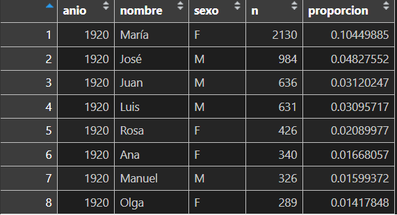

# Cargamos el paquete
if (!require("guaguas")) install.packages("guaguas")
library(guaguas)Tipos y estructuras de datos en R
Metodología Cuantitativa - TSM301
Clase 2
Contenidos
I. Clase anterior
II. Tibbles
III. Tipos de datos
I. Clase anterior
Clase anterior
Concepto de objeto en
R.Vectores, matrices, dataframes/tibbles.
Instalación de paquetes.
Buenas prácticas para comentar código.
Glosario
| Concepto | Descripción |
|---|---|
Consola o terminal |
Lugar donde se puede escribir código y que retorna o “imprime” los resultados asociados a ese código. |
Script |
Archivo de texto o programa que incluye el código que queremos ejecutar. |
Directorio de trabajo |
En inglés working directory. Indica la ubicación de los archivos de entrada y salida. |
Función |
Conjunto de instrucciones que convierten las entradas o inputs en los resultados u outputs esperados. Las funciones tienen argumentos, que son las entradas que necesita o especificaciones para funcionar. |
Paquetes |
Conjunto de funciones agrupadas y distribuidas mediante una librería diseñadas para temas específicos. Por ejemplo, paquetes para visualizar datos. |
Vector |
Unidad básica de datos en R. |
Dataframe o tibble |
Tabla organizada mediante filas y columnas. |
II. Tibbles
Tibbles/dataframes
Una característica relevante de los tibbles/dataframes es que cada columna o variable corresponde a un vector. Esto permite aplicar una serie de funciones que están disponibles para vectores, tales como:
sum(): retorna la suma de elementosmean(): retorna la media aritmetica.median(): retorna la mediana.sd(): retorna la desviación estándar:max(): retorna el valor máximo.min(): retorna el valor mínimo.which.max(): retorna la posición del valor máximo.which.min(): retorna la posición del valor mínimo.range(): retorna el rango.rev(): revierte el orden de los elementos.unique(): retorna la lista de elementos únicos.length(): retorna el largo.
Datos de ejemplo:
Usaremos el paquete guaguas. Este contiene el primer nombre de los bebés registrados en Chile entre 1920 y 2021 según el Servicio de Registro Civil e Identificación.
La base de datos contiene 858.782 observaciones para cinco variables, las cuales se describen a continuación:
| Nombre | Descripción |
|---|---|
| anio | Año de inscripción en el Servicio de Registro Civil e Identificación |
| nombre | Primer nombre inscrito de la persona |
| sexo | Sexo registral, con categorías “Femenino”, “Masculino” e “Indeterminado” |
| n | Número de ocurrencias del nombre |
| proporcion | proporción del nombre respecto del total de inscripciones del año |
Cargar datos
Para comenzar, se debe instalar y luego cargar el paquete guaguas, el cual contiene el conjunto de datos.
# Cargamos el paquete
if (!require("guaguas")) install.packages("guaguas")
library(guaguas)Luego, se asigna ese conjunto de datos a un objeto llamado datos.
# Notar que el paquete guaguas tiene una función llamada "guaguas".
datos <- guaguasSe puede visualizar usando la función View():
View(datos)
A continuación se presentan algunas funciones con las que cuenta R para inspeccionar los datos.
Funciones: Estructura (1)
-
str(): muestra la estructura de los datos.
str(datos)tibble [858,782 × 5] (S3: tbl_df/tbl/data.frame)
$ anio : num [1:858782] 1920 1920 1920 1920 1920 1920 1920 1920 1920 1920 ...
$ nombre : chr [1:858782] "María" "José" "Juan" "Luis" ...
$ sexo : chr [1:858782] "F" "M" "M" "M" ...
$ n : num [1:858782] 2130 984 636 631 426 340 326 289 277 269 ...
$ proporcion: num [1:858782] 0.1045 0.0483 0.0312 0.031 0.0209 ...
- attr(*, "spec")=List of 3
..$ cols :List of 5
.. ..$ anio : list()
.. .. ..- attr(*, "class")= chr [1:2] "collector_double" "collector"
.. ..$ nombre : list()
.. .. ..- attr(*, "class")= chr [1:2] "collector_character" "collector"
.. ..$ sexo : list()
.. .. ..- attr(*, "class")= chr [1:2] "collector_character" "collector"
.. ..$ n : list()
.. .. ..- attr(*, "class")= chr [1:2] "collector_double" "collector"
.. ..$ proporcion: list()
.. .. ..- attr(*, "class")= chr [1:2] "collector_double" "collector"
..$ default: list()
.. ..- attr(*, "class")= chr [1:2] "collector_guess" "collector"
..$ delim : chr ","
..- attr(*, "class")= chr "col_spec"
- attr(*, "problems")=<externalptr> Funciones: Estructura (2)
Funciones: Consultar (1)
head(x, n =): muestra las primerasnfilas del objetox.tail(x, n =): muestra las primerasnfilas del objetox.
head(datos, n = 4)# A tibble: 4 × 5
anio nombre sexo n proporcion
<dbl> <chr> <chr> <dbl> <dbl>
1 1920 María F 2130 0.104
2 1920 José M 984 0.0483
3 1920 Juan M 636 0.0312
4 1920 Luis M 631 0.0310tail(datos, n = 4)# A tibble: 4 × 5
anio nombre sexo n proporcion
<dbl> <chr> <chr> <dbl> <dbl>
1 2021 Zuri F 1 0.00000562
2 2021 Zurick F 1 0.00000562
3 2021 Zury F 1 0.00000562
4 2021 Zyhara F 1 0.00000562Funciones: Resumen (1)
-
summary(): entrega estadísticos de resumen.
summary(datos) anio nombre sexo n
Min. :1920 Length:858782 Length:858782 Min. : 1.00
1st Qu.:1960 Class :character Class :character 1st Qu.: 1.00
Median :1985 Mode :character Mode :character Median : 1.00
Mean :1981 Mean : 25.77
3rd Qu.:2004 3rd Qu.: 3.00
Max. :2021 Max. :21448.00
proporcion
Min. :3.060e-06
1st Qu.:3.790e-06
Median :5.130e-06
Mean :1.188e-04
3rd Qu.:1.437e-05
Max. :1.045e-01
III. Tipos de datos
Tipos de datos
Como revisamos en la clase anterior, R cuenta con una serie de tipos de datos definidos de antemano.
| Tipo | Descripción | Ejemplo |
|---|---|---|
integer |
Números enteros | -1, 0, 1 |
numeric |
Números reales | -0.5, 1/2, 1 |
character |
Texto/String | “Erwin”, “Armin”, “Sasha”, “Titanes” |
factor |
Datos categóricos | “Trabajo Social [1]”, “Otra carrera [2]” |
haven_labelled |
Valores numéricos con etiquetas asociadas | 1 = “Muy en desacuerdo”; 2 = “En desacuerdo”; 3 “Ni de acuerdo ni en desacuerdo”; 4 = “De acuerdo”; 5 “Muy de acuerdo” |
logical |
Verdadero o falso | “TRUE”, “FALSE” |
NA |
Valores perdidos | NA |
NULL |
Objetos nulos. Es devuelto por expresiones o funciones | NULL |
Enteros y numéricos (1)
Representan números enteros, sin parte decimal. Pueden ser usados en operaciones matemáticas y en el contexto de bases de datos, contienen información para las observaciones.
En este caso, seleccionaremos la columna “n” que es de tipo numérica.
datos[, "n"] # Seleccionamos todos los casos para la columna "n"# A tibble: 858,782 × 1
n
<dbl>
1 2130
2 984
3 636
4 631
5 426
6 340
7 326
8 289
9 277
10 269
# ℹ 858,772 more rowsEnteros y numéricos (2)
Y podríamos ordenar las filas de esa columna de manera descendente y agregarle más columnas para tener información de contexto.
# A tibble: 858,782 × 3
anio nombre n
<dbl> <chr> <dbl>
1 1955 María 21448
2 1956 María 21013
3 1965 María 20382
4 1954 María 20172
5 1957 María 20154
6 1962 María 19862
7 1959 María 19701
8 1958 María 19593
9 1960 María 19581
10 1953 María 19566
# ℹ 858,772 more rowsEnteros y numéricos (3)
Al aplicar operaciones matemáticas se debe tener cuidado con los datos perdidos.
La media no se puede calcular si hay valores perdidos. En estos casos se debe excluir los valores perdidos usando la opción na.rm con valor TRUE.
Strings o texto (1)
Corresponden a cadenas de texto o también denominadas secuencias de caracteres. Se reconocen porque están encerradas en comillas simples ' ' o dobles " ".
mi_texto <- "Bienvenido/a. Su nombre es:"Con la función paste() se pueden concatenar strings. Además, cuenta con el argumento sep que indica el separador que tendrá el texto. Por defecto es un espacio vacío.
paste(mi_texto, "Julio Cesar", sep = " ")[1] "Bienvenido/a. Su nombre es: Julio Cesar"Y podemos usar cualquier separador.
paste(mi_texto, "Julio Cesar", sep = "------>")[1] "Bienvenido/a. Su nombre es:------>Julio Cesar"Y se pueden concatenar más de dos strings a la vez. En estos casos con el argumento collapse() para separar los resultados.
Strings o texto (2)
También está la función paste0(). Esta no tiene como argumento sep y siempre concatenará sin espacios.
mi_texto_2 <- "30/08/"
paste0(mi_texto_2, "2023")[1] "30/08/2023"Strings o texto (3)
Otras funciones útiles son:
toupper(x): convierte el vector a mayúsculas.tolower(x): convierte el vector a minúsculas.nchar(x): retorna el número de caracteres del string.
mi_texto_3 <- "Hola Mundo"
toupper(mi_texto_3)[1] "HOLA MUNDO"tolower(mi_texto_3)[1] "hola mundo"nchar(mi_texto_3) # Cuenta 10 porque espacio también es un caracter[1] 10Además R cuenta con otras funciones base para strings tales como grep() gsub().
Factores (1)
Este es un tipo de dato específico de R para datos categóricos. Los factores toman un número acotado de valores distintos, los cuales son llamados niveles o levels.
Ejemplo1:
1 Ejemplo adaptado de R For Data Science, segunda edición.
- Suponga que tiene una variable con valores para cuatro meses. Usar esta variable como un string tiene al menos dos problemas:
- Los valores válidos están restringidos a 12 categorías. Solo pueden ingresarse esos valores.
- Si quiero ordenarlo, lo hará alfabéticamente.
Factores (2)
Los factores buscan solucionar los problemas antes mencionados. Para crear un factor lo primero que debe hacerse es definir un vector de valores válidos, los que se asignarán al factor.
meses_levels <- c(
"Enero", "Febrero", "Marzo", "Abril", "Mayo", "Junio",
"Julio", "Agosto", "Septiembre", "Octubre", "Noviembre", "Diciembre"
)
factor_x1 <- factor(x1, levels = meses_levels)
sort(factor_x1)[1] Enero Febrero Marzo Abril
12 Levels: Enero Febrero Marzo Abril Mayo Junio Julio Agosto ... DiciembreY cualquier valor que no sea parte de los levels del factor se convertirá en NA.
meses_levels <- c(
"Enero", "Febrero", "Marzo", "Abril", "Mayo", "Junio",
"Julio", "Agosto", "Septiembre", "Octubre", "Noviembre", "Diciembre"
)
factor_x2 <- factor(x2, levels = meses_levels)
factor_x2[1] Enero <NA> <NA> Abril
12 Levels: Enero Febrero Marzo Abril Mayo Junio Julio Agosto ... DiciembreFactores (3)
Los factores nativos de R tienen algunos inconvenientes:
- Convierten directamente en
NAlos valores sin emitir alertas. Esto puede ser riesgoso. - Si no se le entregan los
levelsal factor, estos serán ordenados automáticamente de manera alfabética. Sin embargo, esto no es deseable, porque no todos los computadores ordenan los strings de la misma forma.
Por estas razones en el curso preferiremos paquetes que los implementan de otro modo.
¡Gracias!
https://sirojasv.github.io/tsm_web/